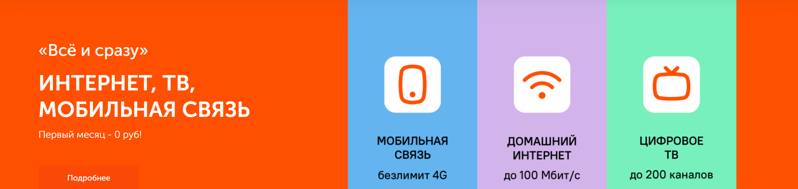
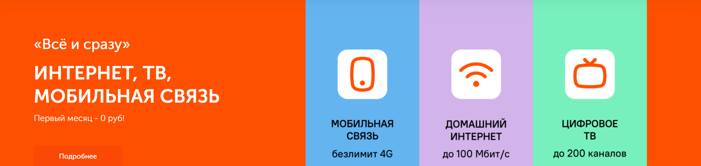

ТАТТЕЛЕКОМ
Таттелеком – крупнейший в Республике Татарстан оператор проводной электросвязи, стабильно занимающий лидирующее положение на рынке оказания телекоммуникационных услуг.
Мы предоставляем нашим абонентам весь комплекс современных услуг связи: местная и зоновая телефонная связь, доступ к сети Интернет, кабельное и интерактивное цифровое телевидение, мобильная связь.
Услуги подвижной радиотелефонной связи оказывает ООО «Твои мобильные технологии».
Миссия Таттелеком
1998
1 апреля 1998 года
1 апреля 1998 года на базе обособленного структурного подразделения Министерства связи РТ «Казанская междугородная телефонно-телеграфная станция» создано Государственное унитарное предприятие «Управление электрической связи «Таттелеком».
2003
ОАО Таттелеком
На основании Постановления Кабинета Министров РТ № 350 от 2 июля 2003 года и Постановления Министерства земельных и имущественных отношений Республики Татарстан № 87 от 8 июля 2003 года ГУП «Таттелеком» было преобразовано в открытое акционерное общество.
2007
30 июля
30 июля — ОАО «Таттелеком» первым в России завершил реализацию национального приоритетного проекта «Образование», подключив 2245 образовательных учреждений Татарстана к широкополосному доступу в Интернет.
2015
Январь
«Таттелеком» запустил 1000-ю базовую станцию высокоскоростной сети 4G.
2018
10 января
Компания Таттелеком стала дипломантом Всероссийского конкурса "100 Лучших товаров России" 2017 года, а также награждена дипломом I степени конкурса "Лучшие товары и услуги Республики Татарстан" 2017 года в номинации услуги для населения. Члены жюри высоко оценили качество комплекса телекоммуникационных услуг, предоставляемых Таттелеком.
2019
Февраль
ОАО «Таттелеком» одной из первых в республике поддержала инициативу правительства, и объявила о старте собственной программы повышения уровня компьютерной грамотности населения Татарстана. Первые бесплатные курсы компьютерной грамотности открылись на базе Верхнеуслонского РУЭС.